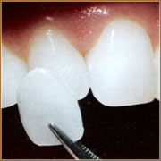

Коронки
Зубная коронка помогает восстановить сильно разрушенный зуб, казалось бы, в самой безнадежной ситуации. Вернуть ему прежнюю форму и функцию, а впоследствии защитить от кариеса.
Век золотых зубов прошел и сегодня современная стоматология предлагает не только надежные, но и эстетичные ортопедические конструкции, отвечающие самым высоким требованиям пациентов. Эта статья о том, что такое зубные коронки, каких видов они бывают и сколько стоят.
Керамические виниры
Виниры - тонкие керамические пластинки, которые приклеиваются на передние поверхности зубов. Керамические виниры - тонкие пластинки, покрывающие переднюю поверхность зубов толщиной 0,5-0,7 мм. Таким образом, внешняя сторона зуба воссоздается с помощью керамики, а внутренняя - остается нетронутой.


- 
Люминиры
Люминиры (Lumineers) – это керамические пластины на зубы, такие же, как и виниры, но тоньше. Люминиры практически не требуют обтачивания зубов. При этом, по прочности люминир не уступает классическим винирам.
Основное назначение люминиров - возможность скрыть существующие дефекты зубного ряда и подарить пациенту ослепительную белоснежную улыбку.